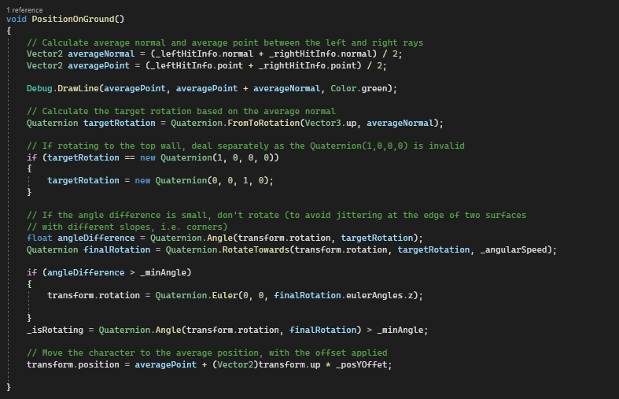
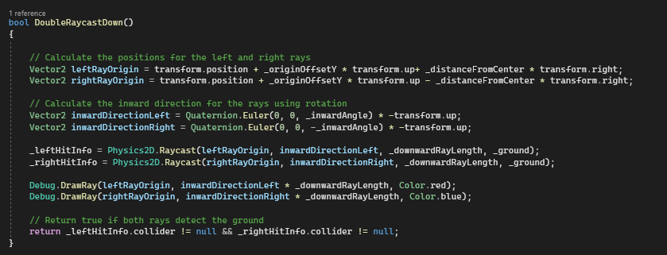
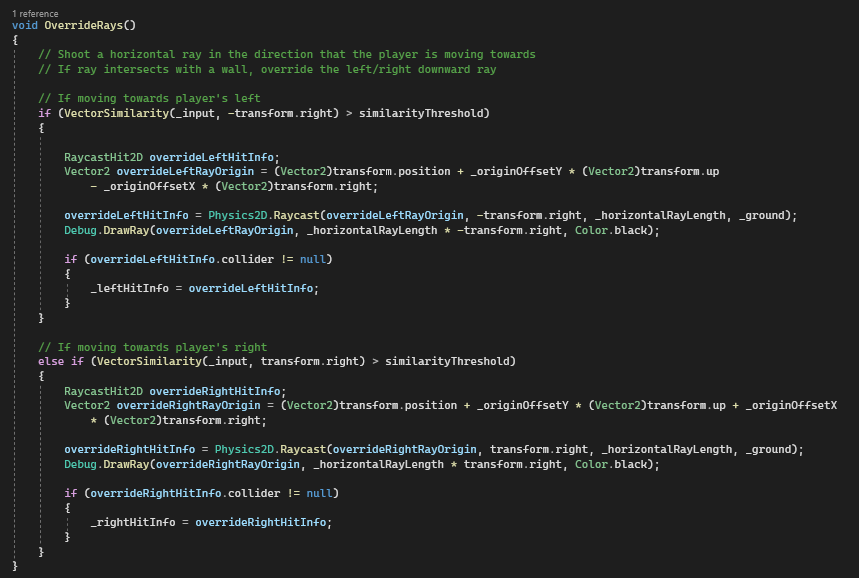

Carmy: One Scale Fits All

About
Carmy: One Scale Fits All started as a small game jam project during the GMTK Game Jam 2024, with the theme "Built to Scale". This game is a 2D metroidvania where the main character, Carmy the chameleon, goes on a journey to discover colors. Carmy can walk on walls resisting gravity, stretch his tongue out to swing, and pull itself to different objects. While he does not know how to change colors yet, picking up scales allows him to change colors, and lets him camouflage into his surroundings, hiding from his predators.
Project Information
Role: Gameplay Programmer
Engine: Unity (C#)
Time spent: 2 weeks -
Team size: 9
Project Details
After the game jam ended, one of the musicians and I decided to continue working on the game to turn it into a larger scale project. Currently we are working on discussing details and the GDD, and since the product from the game jam has buggy movement, I am working on fixing the movement code. The wall walking mechanic was definitely a challenging one, as the game has to detect when the player can move in the direction the input is in.
Movement
Here are the 3 main problems I had to solve for this movement:
- Detect if the player can proceed in the input direction
- Rotate on convex corners
- Rotate on concave corners
The input stays consistent to the screen, regardless of the character's orientation. Pressing the left input key (A) would make the player go left, regardless of whether the player is upside down or upright, as long as the character's feet are grounded. To deal with the first problem, I used a downward raycast and calculated the ground normal. Then, I compared the normal vector and the input vector and only allowed movement when they are almost orthogonal. This is because when these vectors are orthogonal, the input vector and the ground are parallelly aligned, meaning that the player is tring to move in a valid direction.
void Walk()
{
if (!_isRotating)
{
Vector2 groundNormal = (_leftHitInfo.normal + _rightHitInfo.normal) / 2;
if (VectorSimilarity(_input, groundNormal) < similarityThreshold)
{
// Allow movement in the input direction
_rb.velocity = _input.normalized * _speed;
}
}
else _rb.velocity = Vector2.zero;
}
To deal with rotation, I used 2 downward raycasts, one at the front of the body, and one at the back of the body. Using the normals obtained from the 2 rays, I can calculate the average normal and average intersection position, to which we can apply on the character. The inwardDirectionLeft and inwardDirectionRight are used to rotate the downward rays towards the center, to deal with convex corners. If the 2 rays were perpendicular to the ground, one ray would never detect the vertical wall as there is no gravity acting on the character. To combat this, we add a little rotation to the rays to face the center. One problem that remains is that there is an infinite number of normals at corners, causing the character to jitter at corners. To prevent this issue, I added a minimum threshold angle that angleDifference must overcome in order for the character to rotate.
 For concave corners, we need a way to detect walls that are infront of the character, and rotate the character accordiongly. Note that we only want to rotate the characters when the player desires and should not happen automatically when the player is next to it (e.g. if a wall is on the left of the player and the player presses up, this should rotate the character 90 degrees clockwise and move the player up the vertical wall). This means that we want to add a horizontal ray, but only when there is input in that direction. When this horizontal ray detects walls, it will override one of the two downward rays, and rotate the character to align it to wall.
